Creative
Every note node in Infinite: generative arpeggiators and algorithmic sequencing
Explore all 24 note nodes in Infinite: algorithmic arpeggiators, scale quantizers, Markov chains, chord generators, humanizers, and generative note logic.

on this page
- 1. MIDI Notes: hardware controller & MPE input bridge
- 2. Keyboard: interactive on-screen playable piano
- 3. Note Filter: range, channel, and velocity gate
- 4. Note Transpose: chromatic and scale-aware pitch shifting
- 5. Pitch Bend: expressive pitch deflection router
- 6. Velocity Curve: dynamic touch and curve response
- 7. Gate: rhythmic duration and articulation shaper
- 8. Humanizer: micro-timing shuffle and organic dynamics
- 9. Quantizer: musical scale and modal pitch snapping
- 10. Glide: monophonic portamento and polyphonic slide
- 11. Note Echo: algorithmic MIDI delay and rhythmic repeats
- 12. Note Router: dynamic keyboard splitting and voice dispatching
- 13. Note Merge: unified polyphonic stream combiner
- 14. Note Switcher: modulated phrase selector
- 15. Arpeggiator: algorithmic pattern and chord engine
- 16. Note Sequencer: 16-step polyphonic pitch & gate grid
- 17. Random Note Generator: constrained generative melody engine
- 18. MIDI File: standard MIDI file canvas player
- 19. Chorder: single-note harmonizer and chord voicings
- 20. Note Stack: interval and octave voice layering
- 21. Note Capturer: live performance buffer recorder
- 22. Bouncing Balls: physics-based rhythmic trigger generator
- 23. Note Strum: realistic acoustic chord strumming
- 24. Field Notes: programmable algorithmic note generation
- Modular note architecture
In traditional music production environments, MIDI is treated as a static piano roll. Notes are clicked onto a grid, quantised rigidly, and routed through a single linear track directly into a virtual instrument.
Infinite re-imagines MIDI and musical timing as an open, modular stream of discrete note events. Notes are not passive rows in an arrangement; they are first-class signals that flow through cables, branch across splitters, undergo algorithmic transformations, and drive both sound engines and 3D visual geometry in real time.
Infinite provides twenty-four dedicated note processing nodes, spanning hardware input bridges, rhythmic arpeggiators, Markov-chain phrase predictors, physics-based trigger simulations, scale quantizers, and programmable algorithmic note generators.
Here is an architectural guide to every note node in Infinite, how they process musical events, and how to patch generative music systems on the canvas.
1. MIDI Notes: hardware controller & MPE input bridge
The MIDI Notes node connects physical MIDI keyboards, pad controllers, and MPE (MIDI Polyphonic Expression) devices to the Infinite canvas.

How it works
- Multi-channel routing: Listens on all channels (Omni) or binds to a specific MIDI channel (
1to16). - MPE support: Full per-note polyphonic pitch bend, slide, and pressure/aftertouch tracking.
- Port activity visualization: Real-time visual LEDs displaying active note-on gates, polyphonic voice count, and pitch numbers.
- Event stream outputs: Outputs polyphonic note events cleanly buffered for sample-accurate scheduling.
Try it
Connect a USB MIDI keyboard, wire MIDI Notes into an Analog synth, and route per-note MPE pressure into the filter cutoff knob.
MIDI Notes -> Analog -> Audio Out2. Keyboard: interactive on-screen playable piano
The Keyboard node provides a playable virtual piano keyboard directly inside the node canvas, supporting mouse clicks, multi-touch, and computer QWERTY keyboard typing.
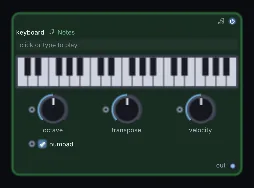
How it works
- Octave range navigation: Configurable key span with quick octave shift controls.
- Musical scale highlighting: Highlights active scale notes across white and black keys, preventing accidental off-key inputs during live performance.
- Velocity sensitivity: Clicking near the bottom of a key triggers high velocity (up to 127), while clicking near the top triggers soft pianissimo notes.
Try it
Select the Dorian scale in the inspector, highlight the scale keys, and jam melodies using your computer keyboard without opening external controllers.
Keyboard -> FM -> Reverb -> Audio Out3. Note Filter: range, channel, and velocity gate
The Note Filter node acts as a selective filter for incoming note streams, allowing only notes meeting specific musical criteria to pass downstream.
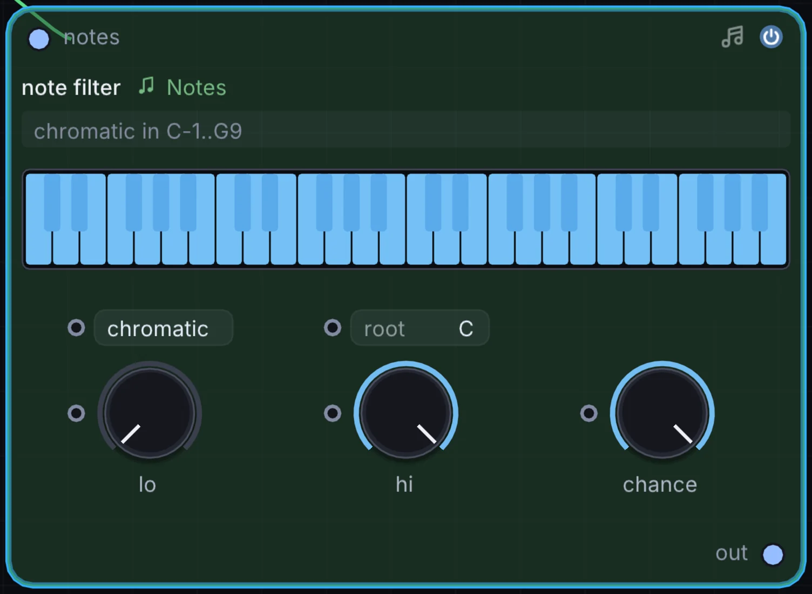
How it works
- Pitch key zones: Set minimum and maximum note limits (e.g.
C1toB2for bass,C3toC6for leads) to create multi-instrument keyboard splits. - Velocity window: Filters notes by dynamics, passing only ghost notes (low velocity) or accents (high velocity).
- Channel filtering: Strips out or isolates specific MIDI channels from multi-timbral controllers.
Try it
Wire one MIDI Notes output into two Note Filters: set filter 1 to notes below C3 for a sub bass synth, and filter 2 to notes above C3 for a shimmering lead.
MIDI Notes -> Note Filter (Low) -> Analog (Bass)
MIDI Notes -> Note Filter (High) -> Wavetable (Lead)4. Note Transpose: chromatic and scale-aware pitch shifting
The Note Transpose node shifts the pitch of incoming note events by octaves and semitones while optionally constraining the shifted notes to a selected musical scale.
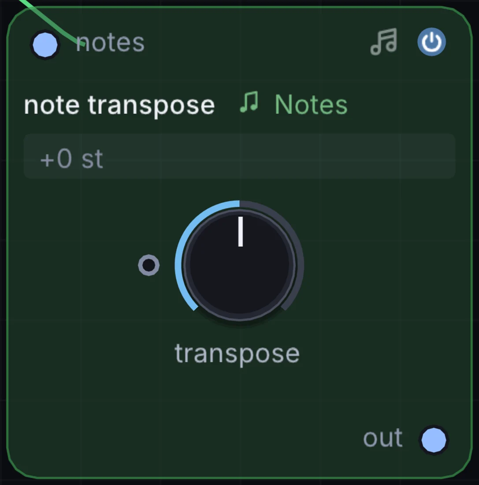
How it works
- Octave & semitone offsets: Shift notes up or down by up to 4 octaves and 12 semitones.
- Modulatable transposition: The semitone parameter is modulatable, allowing an LFO or step sequencer to modulate chord progressions automatically.
- Scale snapping: Forces transposed notes onto the nearest valid scale degree to prevent dissonant pitch clashes.
Try it
Modulate Note Transpose with a Slow Step Sequencer to shift an arpeggio across root, fourth, and fifth chords every four bars.
Arpeggiator -> Note Transpose -> Wavetable -> Audio Out5. Pitch Bend: expressive pitch deflection router
The Pitch Bend node routes and scales continuous pitch bend wheel messages and modulation signals for connected synthesizers.
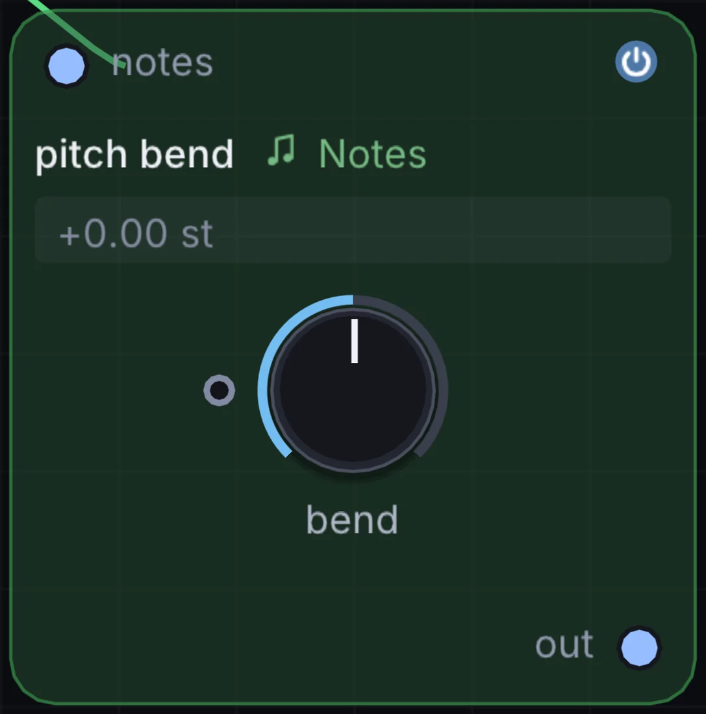
How it works
- Configurable bend range: Adjust the pitch bend semitone window from 1 semitone to a full octave (
-12to+12semitones). - Bipolar modulation input: Accepts LFO or envelope modulation to produce automatic vibrato and dive bombs.
- Smoothing: Built-in 14-bit interpolation prevents audible stepping during aggressive wheel movements.
Try it
Wire a slow triangle LFO into Pitch Bend to add subtle, expressive pitch wander to vintage synth leads.
LFO -> Pitch Bend -> Analog -> Audio Out6. Velocity Curve: dynamic touch and curve response
The Velocity Curve node remaps the velocity dynamics of incoming note events, tailoring keyboard touch response to performance preferences.
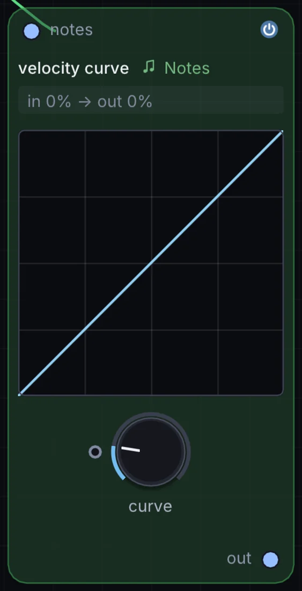
How it works
- Curve profiles: Linear, Exponential (emphasising soft touches), Logarithmic (punchy and responsive), and S-curve (compressed dynamics).
- Min/max clamping: Sets minimum velocity floor and maximum ceiling limits.
- Fixed velocity mode: Locks all incoming notes to a single uniform velocity level (such as 100 for consistent organ or synth-pop lines).
Try it
Apply an Exponential velocity curve to a physical Karplus-Strong String synth for natural acoustic response when playing delicate arpeggios.
MIDI Notes -> Velocity Curve (Exp) -> String -> Audio Out7. Gate: rhythmic duration and articulation shaper
The Gate node controls the duration of active note events, turning sustained chords into short staccato bursts or stretching short taps into legato drones.
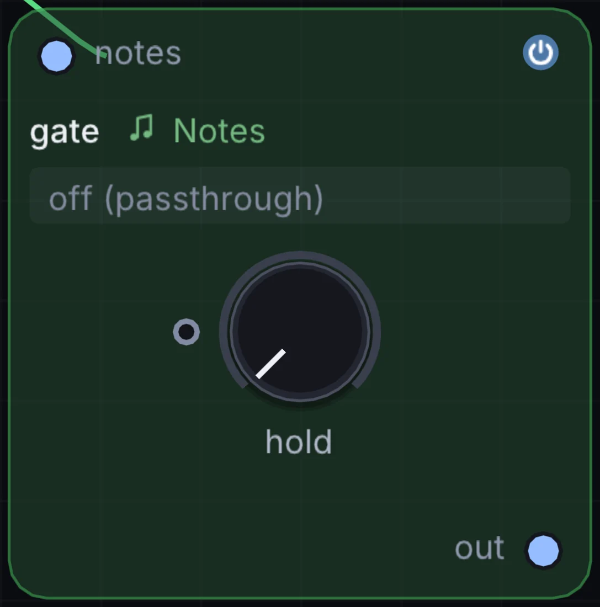
How it works
- Time and beat modes: Set gate length in milliseconds (
5msto2000ms) or metric musical divisions (1/16,1/8,1/4). - Fixed gate vs proportional: Choose between fixed note lengths or proportional scaling (e.g. 50% staccato of incoming note length).
- Legato tie mode: Automatically bridges notes together when consecutive keys overlap.
Try it
Feed an Arpeggiator into Gate set to 15% length to transform an arpeggio into tight, robotic 16th-note staccato plucks.
Arpeggiator -> Gate (15%) -> FM -> Audio Out8. Humanizer: micro-timing shuffle and organic dynamics
The Humanizer node injects subtle, natural human imperfections into rigid, computer-quantized note streams.
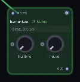
How it works
- Timing jitter: Introduces microscopic Gaussian time offsets (from
0msto35ms) to note onsets, simulating the slight imprecisions of live human performance. - Velocity spread: Randomizes note velocity around the played value by a customizable percentage window.
- Pitch drift: Adds minute micro-tuning offsets for analog acoustic warmth.
Try it
Place Humanizer between a rigid 16-step Note Sequencer and a drum machine or piano synth to make programmed patterns breathe naturally.
Note Sequencer -> Humanizer -> Sampler (Piano) -> Audio Out9. Quantizer: musical scale and modal pitch snapping
The Quantizer node forces arbitrary pitch numbers, microtonal frequencies, and random pitch modulators onto chosen musical scales and temperaments.
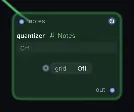
How it works
- Over 40 musical scales: Major, Minor, Dorian, Phrygian, Lydian, Mixolydian, Locrian, Harmonic Minor, Melodic Minor, Pentatonic, Blues, Hirajoshi, Insen, Raga, and microtonal modes.
- Root note transposition: Set the tonic key to any pitch (
CthroughB). - Snap algorithms: Snaps to the nearest scale degree either upward, downward, or to the absolute closest interval.
Try it
Feed a Random Modulator or CV voltage into Quantizer set to Japanese Hirajoshi, and pipe the output into a Metallic resonator for generative gamelan melodies.
Random -> Quantizer (Hirajoshi) -> Metallic -> Delay -> Audio Out10. Glide: monophonic portamento and polyphonic slide
The Glide node produces smooth pitch glides between consecutive notes, featuring both classic analog monophonic portamento and multi-voice polyphonic slide.
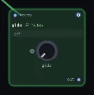
How it works
- Glide time: Continuous portamento rate control (
0msto3000ms). - Legato-only mode: Glides only when two notes overlap in time, leaving non-overlapping notes with instant attack.
- Constant time vs constant rate: Select whether pitch transitions take the same amount of time regardless of distance, or glide at a fixed semitones-per-second velocity.
Try it
Enable Legato Glide on a bass synth patch, hold a low note while tapping octaves higher, and enjoy smooth analog pitch slides.
MIDI Notes -> Glide (Legato) -> Analog (Acid Bass) -> Audio Out11. Note Echo: algorithmic MIDI delay and rhythmic repeats
The Note Echo node creates rhythmic echoing MIDI notes, repeating incoming note events across musical intervals with decay and transposition.
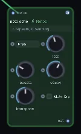
How it works
- Tempo-synced delay time: Set delay intervals to standard, dotted, or triplet metric divisions (
1/16,1/8d,1/4t). - Feedback & count: Controls the number of echo repeats (
1to32). - Velocity decay: Gradually scales down the velocity of successive repeats for natural fading.
- Semitone pitch transpose: Shifts each repeat up or down by a set semitone interval, turning a single key press into an ascending or descending staircase.
Try it
Set Note Echo to a dotted 8th note (1/8d) with a +7 semitones (fifth) pitch shift, and play single notes to create layered arpeggiated patterns.
MIDI Notes -> Note Echo (1/8d, +7) -> Wavetable -> Audio Out12. Note Router: dynamic keyboard splitting and voice dispatching
The Note Router node directs incoming notes across up to four separate output ports based on pitch thresholds, velocity ranges, or voice allocation.
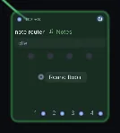
How it works
- Split mode: Routes notes below a split point to Output 1, and notes above to Output 2.
- Velocity dispatch: Sends soft notes to an intimate electric piano, and hard accents to a brass synth.
- Round-robin voice allocation: Cycles notes sequentially across Outputs 1, 2, 3, and 4, allowing four distinct synthesizers to share parts of a polyphonic phrase.
Try it
Set Note Router to Round-Robin and connect three different synths (Analog, FM, and String) to play dynamic hocketing melodies where every note has a unique timbre.
Arpeggiator -> Note Router (Round Robin) -> [Analog, FM, String]13. Note Merge: unified polyphonic stream combiner
The Note Merge node combines multiple independent note streams into a single unified polyphonic stream with intelligent collision handling.
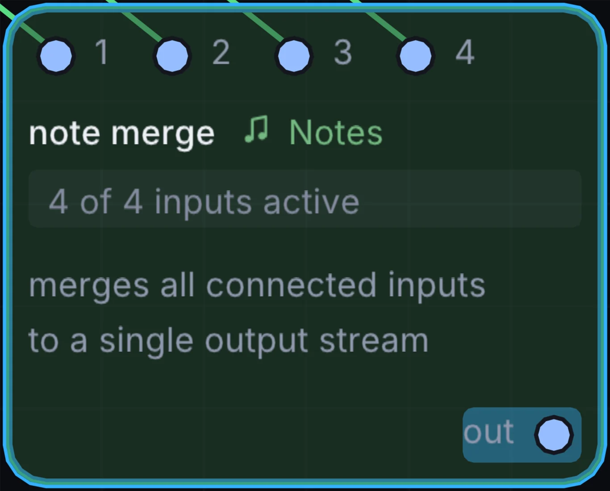
How it works
- Multi-input bus: Combines up to four note sources into one stream.
- Duplicate note suppression: Prevents hanging notes and double-trigger clicks when two input streams send the same pitch simultaneously.
- Voice priority: Option to prioritize higher or lower notes during polyphony overflow.
Try it
Merge an algorithmic Arpeggiator pattern with live keyboard playing so you can play expressive solo counter-melodies over automated sequences.
[Arpeggiator, Keyboard] -> Note Merge -> Analog -> Audio Out14. Note Switcher: modulated phrase selector
The Note Switcher node selects which of several incoming note streams passes downstream, controlled via a macro knob or logic trigger.
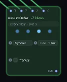
How it works
- Multi-channel selector: Seamlessly switches between alternate note patterns without dropping active note-off events.
- Modulatable selection index: Switch patterns automatically using a slow square LFO or timeline automation track.
- Smooth transition handling: Sends clean note-off messages to active voices before switching to prevent stuck notes.
Try it
Wire a verse bassline into Input 1 and a chorus bassline into Input 2, then automate the selector with a Macro Toggle for arrangement transitions.
[Pattern A, Pattern B] -> Note Switcher -> Analog -> Audio Out15. Arpeggiator: algorithmic pattern and chord engine
The Arpeggiator node takes held chords and breaks them into rhythmic, tempo-synced melodic sequences.

How it works
- Directional modes: Up, Down, Up/Down, Down/Up, Random, Chord Repeat, and As-Played.
- Octave span: Sweeps arpeggios across
1to4octaves with cyclical or ping-pong octave progression. - Gate & swing: Adjusts note duration percentage and metric shuffle.
- Hold toggle: Latches played chords so the arpeggio continues cycling after keys are released.
Try it
Hold a minor ninth chord, set Arpeggiator to Up/Down across 3 octaves at 1/16th notes, and route through an analog filter sweep.
Keyboard -> Arpeggiator (Up/Down) -> Analog -> Audio Out16. Note Sequencer: 16-step polyphonic pitch & gate grid
The Note Sequencer node is a classic 16-step grid sequencer with per-step pitch, velocity, octave shift, and gate tie controls.
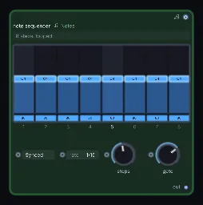
How it works
- Interactive step matrix: 16 dedicated pitch knobs with visual semitone displays.
- Per-step ties & mutes: Tie steps together for long sustained bass notes, or mute steps for syncopated rests.
- Variable step length: Set pattern length from 1 to 16 steps to create odd-meter polyrhythms (such as 5/16 or 7/16).
- Direction modes: Forward, Reverse, Ping-Pong, and Brownian random walk.
Try it
Set the sequencer length to 7 steps over 16th notes to produce a shifting polyrhythmic ostinato that cycles across the 4/4 bar line.
Note Sequencer (7 Steps) -> FM -> Delay -> Audio Out17. Random Note Generator: constrained generative melody engine
The Random Note Generator node creates constrained melodic phrases and basslines algorithmically in real time.
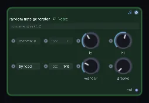
How it works
- Key & scale constraints: Restricts generated notes strictly to a selected musical key and scale.
- Interval jump weighting: Biases random generation toward small melodic steps (seconds and thirds) rather than wide, disjointed leaps.
- Rhythmic density: Controls the probability of active note triggers per clock tick, introducing musical rests.
- Seed repeatability: Freeze the random seed to loop an inspiring generated phrase indefinitely.
Try it
Set the scale to Minor Pentatonic, set density to 60%, and pipe the generated notes into a Wavetable pad for an endless generative ambient performance.
Random Note Generator -> Wavetable -> Reverb -> Audio Out18. MIDI File: standard MIDI file canvas player
The MIDI File node loads and plays standard .mid sequence files directly on the canvas, locked to the global transport clock.
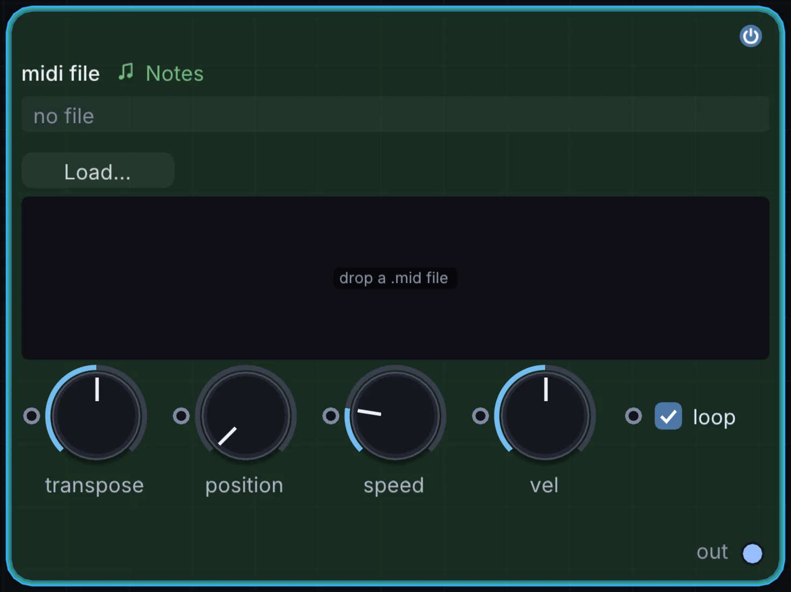
How it works
- Drag and drop loading: Drop standard Type 0 or Type 1 MIDI files directly onto the node body.
- Track isolation: Choose which MIDI track to output, or sum all tracks into one polyphonic stream.
- Transport synchronization: Automatically tracks project tempo, loop markers, and timeline playhead location.
Try it
Drag a complex classical piano MIDI file onto the canvas, route note outputs to a String synth, and use note velocities to drive 3D particle bursts.
MIDI File -> String -> Audio Out
MIDI File (Velocity) -> Particle System (Speed)19. Chorder: single-note harmonizer and chord voicings
The Chorder node converts single incoming note taps into rich multi-voice polyphonic chords.
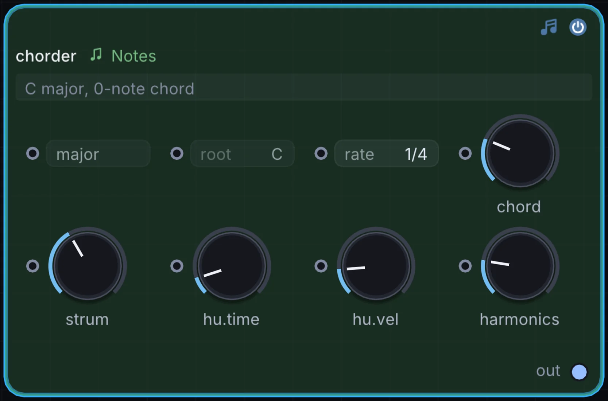
How it works
- Pre-configured chord types: Major, Minor, Sus2, Sus4, Dominant 7th, Major 7th, Minor 7th, 9th, and Diminished.
- Custom chord editor: Define custom interval offsets (e.g.
[0, +7, +12, +16]) for signature chords. - Root-relative transposition: Voicings transpose across the keyboard relative to the incoming note pitch.
Try it
Select Minor 9th voicing, set Arpeggiator downstream, and play single bass notes to trigger sweeping impressionist arpeggios.
Keyboard -> Chorder (Min 9) -> Arpeggiator -> Wavetable -> Audio Out20. Note Stack: interval and octave voice layering
The Note Stack node layers harmonic interval copies on top of played notes to thicken synth leads and basslines.
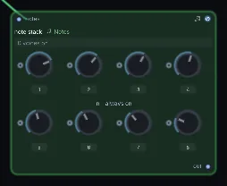
How it works
- Up to 4 interval layers: Add octave below (
-12), fifth above (+7), octave above (+12), or custom intervals. - Per-voice detuning: Applies subtle pitch detuning between stacked voices for rich chorus effects.
- Velocity scaling: Scales the velocity of stacked intervals relative to the primary note.
Try it
Add an octave below (-12) and a fifth above (+7) to an analog saw lead to produce a classic vintage stadium rock synth sound.
MIDI Notes -> Note Stack (-12, +7) -> Analog -> Audio Out21. Note Capturer: live performance buffer recorder
The Note Capturer node acts as a live MIDI scratchpad, recording incoming performances into a circular memory buffer for playback or loop export.
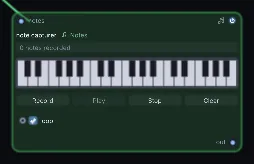
How it works
- Retrospective recording: Keeps a continuous rolling buffer of your recent playing, allowing you to capture spontaneous improvisation after it occurs.
- Bar quantization: Trims captured phrases cleanly to musical bar boundaries.
- Loop playback: Plays captured takes in a continuous loop while leaving the keyboard free for additional layers.
Try it
Improvise freely on your keyboard, press Capture to grab the last 4 bars, and immediately loop the phrase while designing synth patches.
MIDI Notes -> Note Capturer (Loop) -> Analog -> Audio Out22. Bouncing Balls: physics-based rhythmic trigger generator
The Bouncing Balls node runs an internal physics simulation where virtual spheres bounce inside a gravity well, triggering note events whenever a ball collides with the floor.
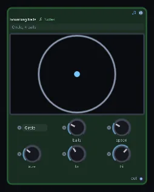
How it works
- Gravity & elasticity: Balls bounce with physically realistic gravitational acceleration, bouncing rapidly as they reach the floor.
- Multi-ball polyphony: Simulate up to 8 independent bouncing spheres with differing drop heights and restitution coefficients.
- Collision pitch mapping: Map collision velocity to note velocity, and bounce frequency to musical pitch.
Try it
Route Bouncing Balls into a Metallic resonator or physical String synth to hear organic, accelerating acoustic impacts mimicking raindrops or dropped marbles.
Bouncing Balls -> Metallic Resonator -> Reverb -> Audio Out23. Note Strum: realistic acoustic chord strumming
The Note Strum node emulates guitar and harp playing by staggering the onset times of notes in a polyphonic chord.
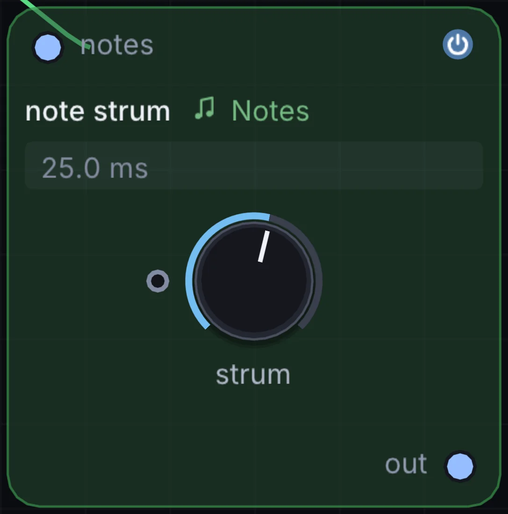
How it works
- Strum speed: Sets the time delay between consecutive notes (
2msto150ms). - Direction control: Down-strum (low notes to high notes), Up-strum (high notes to low notes), or Alternating.
- Velocity decay: Gradually tapers velocity across the strum to emulate natural hand dynamics.
Try it
Place Note Strum between a Chorder and a String physical modeling synth for convincing nylon-string acoustic guitar chord strumming.
Keyboard -> Chorder -> Note Strum -> String -> Audio Out24. Field Notes: programmable algorithmic note generation
The Field Notes node allows you to script custom generative algorithms, Markov-chain phrase models, and rhythmic logic directly in Infinite's bare-name Field language.
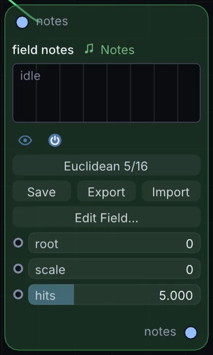
How it works
- Event-driven execution: Executes on every clock tick or MIDI input trigger.
- State registers: Retains history across steps to calculate Euclidean rhythms, Fibonacci sequences, or cellular automata.
- Output note generation: Emits note pitch, velocity, and gate events directly to downstream synths.
Example: Fibonacci sequence arpeggiator
// registers: step_counter, prev_a, prev_b
state a = 1
state b = 1
state step = 0
// advance Fibonacci sequence modulo 12
let next_fib = (a + b) % 12
a = b
b = next_fib
step = step + 1
// map to minor pentatonic scale
let root = 60
let intervals = [0, 3, 5, 7, 10]
let note_out = root + intervals[next_fib % 5]
emit_note(note_out, 90, 120) // pitch, velocity, duration_msTry it
Drop a Field Notes node, enter your own algorithmic rules, and explore generative compositions impossible in conventional static DAWs.
Clock -> Field Notes -> FM -> Delay -> Audio OutModular note architecture
Because Infinite unifies note processing, audio synthesis, and visual rendering onto a single real-time execution graph, these note nodes can drive both sound and visual form simultaneously.
An Arpeggiator can trigger a synth lead while stepping through colors in an Audio Color Ramp, and the physical collisions of a Bouncing Balls node can displace 3D geometry meshes at the exact microsecond an acoustic chime rings out.
Drop any note node onto the canvas, cable it into an instrument, and build generative musical systems unconstrained by linear timelines.